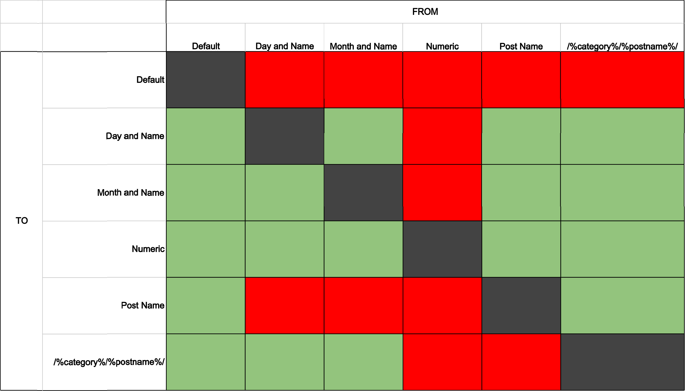

Rewrite Recipes
Advanced Permalinks and Rewrites by Example
by Matthew Boynes / @senyob / m@boyn.es
Alley Interactive / alleyinteractive.com
Recipe 1: Adding custom taxonomies to custom post type rewrites
Website for car dealership
- Goal URI:
- /inventory/toyota/camry/
- Taxonomy:
- make (e.g. Toyota)
- Post Type:
- model (e.g. Camry)
Step 1: Alter the post type & taxonomy slugs
register_taxonomy( 'make', 'model', array(
'rewrite' => array(
'slug' => 'inventory'
)
) );
register_post_type( 'model', array(
'public' => true,
'rewrite' => array(
'slug' => 'inventory/%make%'
)
) );
Step 2: Filter post_type_link
Right now, the custom post type links
have the literal %make% in them.
function modify_model_links( $link, $post ) {
if ( 'model' == $post->post_type ) {
if ( $makes = get_the_terms( $post->ID, 'make' ) ) {
return str_replace( '%make%', array_pop( $makes )->slug, $link );
}
}
return $link;
}
add_filter( 'post_type_link', 'modify_model_links', 10, 2 );
Step 3: Flush Rewrites
Any changes to rewrite rules require flushing them.
- Go to Settings → Permalinks
- Click Save Changes
Proof is in the pudding, so let's try it out!
Psst, Matt, that's you.
Awesome.

What's happening here?
- Request comes in
- WP::parse_request converts the URL to query args
- Other stuff happens, covered in other talks
WP::parse_request
- "Normalizes" the URI
- Loops over all rewrite rules for a match
- Replaces the $matches with regex captures
Anatomy of a Rewrite Rule
Array key => value
Regular expression (the rule) => Redirect (default URL)
Since this is an array, note that you can't have the same rule twice
Storage
- Rewrite rules are stored in wp_options
- Serves as a cache
- "Flushing" rules deletes it
$wp_rewrite->rules
array(
'category/(.+?)/feed/(feed|rdf|rss|rss2|atom)/?$'
=> 'index.php?category_name=$matches[1]&feed=$matches[2]',
'category/(.+?)/(feed|rdf|rss|rss2|atom)/?$'
=> 'index.php?category_name=$matches[1]&feed=$matches[2]',
'category/(.+?)/page/?([0-9]{1,})/?$'
=> 'index.php?category_name=$matches[1]&paged=$matches[2]',
'category/(.+?)/?$'
=> 'index.php?category_name=$matches[1]',
'tag/([^/]+)/feed/(feed|rdf|rss|rss2|atom)/?$'
=> 'index.php?tag=$matches[1]&feed=$matches[2]',
'tag/([^/]+)/(feed|rdf|rss|rss2|atom)/?$'
=> 'index.php?tag=$matches[1]&feed=$matches[2]',
'tag/([^/]+)/page/?([0-9]{1,})/?$'
=> 'index.php?tag=$matches[1]&paged=$matches[2]',
'tag/([^/]+)/?$'
=> 'index.php?tag=$matches[1]',
'robots\.txt$'
=> 'index.php?robots=1',
'.*wp-(atom|rdf|rss|rss2|feed|commentsrss2)\.php$'
=> 'index.php?feed=old',
# ...
)
Recipe 2: Making one custom taxonomy a "parent" of another
What if we wanted to separate by body type?
Let's make body type a taxonomy, too.
Post Types and Taxonomies
- Goal URI:
- /inventory/sedans/toyota/camry/
- Taxonomy:
- body_type (e.g. sedans)
- Taxonomy:
- make (e.g. Toyota)
- Post Type:
- model (e.g. Camry)
Step 1: Alter rewrite slugs
register_taxonomy( 'body_type', 'model', array(
'rewrite' => array( 'slug' => 'inventory' )
) );
register_taxonomy( 'make', 'model', array(
'rewrite' => array( 'slug' => 'inventory/%body_type%' )
) );
register_post_type( 'model', array(
'public' => true,
'rewrite' => array( 'slug' => 'inventory/%body_type%/%make%' )
) );
Step 2: Filter post_type_link
function modify_model_links( $link, $post ) {
if ( 'model' == $post->post_type ) {
if ( $body_types = get_the_terms( $post->ID, 'body_type' ) ) {
$link = str_replace( '%body_type%', array_pop( $body_types )->slug, $link );
}
if ( $makes = get_the_terms( $post->ID, 'make' ) ) {
$link = str_replace( '%make%', array_pop( $makes )->slug, $link );
}
}
return $link;
}
add_filter( 'post_type_link', 'modify_model_links', 10, 2 );
Dealing with term links
Need to replace %body_type% in the make URIs,
e.g. /inventory/%body_type%/.../
This is a little trickier... Why?
Which body type do we want to be the default?
Enter add_permastruct and our first real contact with the Rewrite API!
Step 3: Add "all" body type
WordPress makes this super easy!
function add_permastruct( $name, $struct, $args = array() ) { }
add_permastruct( "all_makes", "inventory/all/%make%" );
register_taxonomy( 'make', 'model', array(
...
Caveat: Order is everything!
Must come before 'make' taxonomy
Step 4: Filter term_link
function modify_make_links( $termlink, $term, $taxonomy ) {
if ( 'make' == $taxonomy ) {
return str_replace( '%body_type%', 'all', $termlink );
}
return $termlink;
}
add_filter( 'term_link', 'modify_make_links', 10, 3 );
Step 5: Flush Rewrites
Always. Flush. Your. Rewrites.
Was the term_link stuff necessary?
Could we have simply done the following?
register_taxonomy( 'make', array(
'rewrite' => array(
'slug' => 'inventory/all'
)
) );
Yes and no. It would work in showing all body types, but wouldn't allow us to restrict by them.
Detour: Helpful Tools
-
Rewrite Rules Inspector
wordpress.org/plugins/rewrite-rules-inspector/ -
Debug Bar (& friends)
wordpress.org/plugins/debug-bar/ -
Regular Expressions Pocket Reference
By Tony Stubblebine, oreilly.com
Rewrite Rules Inspector
Let's look at the last set of rewrite rules.
Recipe 3: Creating Post "Sections"
Website for WordCamps.
Each WordCamp has the same sections:
- Schedule
- Speakers
- Sponsors
- Tickets
- Location
Recipe 3: Creating Post "Sections"
- Goal URIs:
- /wordcamp/portland/
- /wordcamp/portland/schedule/
- /wordcamp/portland/speakers/
- ???
- wordcamp (e.g. portland)
- ???
- section (e.g. schedule)
Recipe 3: Creating Post "Sections"
- Taxonomy:
- wordcamp (e.g. portland)
- Post Type:
- section (e.g. schedule)
- Result:
- /wordcamp/portland/schedule/
- /wordcamp/san-francisco/schedule-2/
- /wordcamp/boston/schedule-3/
Recipe 3: Creating Post "Sections"
- Goal URIs:
- /wordcamp/portland/
- /wordcamp/portland/schedule/
- /wordcamp/portland/speakers/
- ???
- wordcamp (e.g. portland)
- ???
- section (e.g. schedule)
Recipe 3: Creating Post "Sections"
- Goal URIs:
- /wordcamp/portland/
- /wordcamp/portland/schedule/
- /wordcamp/portland/speakers/
- Post Type:
- wordcamp (e.g. portland)
- ???
- section (e.g. schedule)
Recipe 3: Creating Post "Sections"
- Goal URIs:
- /wordcamp/portland/
- /wordcamp/portland/schedule/
- /wordcamp/portland/speakers/
- Post Type:
- wordcamp (e.g. portland)
- Post Meta:
- section (e.g. schedule)
Behind the Scenes
Step 1: Add Rewrite Tag
function add_rewrite_tag( $tag, $regex, $query = '' ) { }
add_rewrite_tag(
'%wc_section%',
'(schedule|speakers|sponsors|tickets|location)'
);
Step 2: Add Rewrite Rule
function add_rewrite_rule( $regex, $redirect, $after = 'bottom' ) { }
add_rewrite_rule(
'wordcamp/([^/]+)/(schedule|speakers|sponsors|tickets|location)/?$',
'index.php?wordcamp=$matches[1]&wc_section=$matches[2]',
'top'
);
Step 3: Templates
wordcamp.php
wordcamp-schedule.php
wordcamp-speakers.php
wordcamp-sponsors.php
wordcamp-tickets.php
wordcamp-location.php
Step 3: Templates
single-wordcamp.php:
<?php
get_template_part( 'wordcamp', get_query_var( 'wc_section' ) );
?>
Step 4: Flush!
Demo
Recipe 4: 301 Ways to Update your Permalinks
Not 404 ways to break things
Or 418 ways to make tea
4.1 Core Permalink Structures
Change core permalinks, what happens to old ones?
Demo
4.1 Core Permalink Structures
Some permalink changes will automatically 301 old structures!
When? When the post name ends the old permalinks (some exceptions)
How? By selling your soul to the devil.
4.1 Core Permalink Structures
redirect_guess_404_permalink
The Good
This magical, very cool function is what handles the auto 301s.
redirect_guess_404_permalink
The How
Page rewrite matches
Gets the "basename" of the page
e.g. /2013/07/21/something/
SELECT ID
FROM wp_posts
WHERE post_name LIKE 'something%'
AND post_status = 'publish'
redirect_guess_404_permalink
The Bad (and Ugly)
Have you ever had WordPress redirect a URL to a post or page that made no sense at all?
This was probably why.
4.2 Better Automatic Redirects
function recipe_4_2() {
if ( is_404() ) {
$redirects = wcpdx_get_redirects();
$matched_rule = false;
$request = wcpdx_get_reqest();
foreach ( (array) $redirects as $match => $query ) {
if ( preg_match("#^$match#", $request, $matches) ||
preg_match("#^$match#", urldecode($request), $matches) ) {
// Got a match.
$matched_rule = true;
break;
}
}
if ( $matched_rule ) {
$query = preg_replace("!^.+\?!", '', $query);
$redirect = addslashes(WP_MatchesMapRegex::apply($query, $matches));
if ( $redirect ) {
wp_redirect( home_url( "?$redirect" ), 301 );
exit;
}
}
}
}
add_action( 'template_redirect', 'recipe_4_2', 5 );
4.3 Options for Custom Redirects
4.4 Replacing Old Permalinks
- Your content is riddled with old links
- Is it worth changing them?
- Enter wp-cli!
About Alley Interactive
- Multi-platform development agency based in New York City, with team members around the country
- Clients in news media, entertainment, non-profit, and education
- We strive to advance WordPress's credibility as a platform for large projects
- WordPress.com VIP Partner
- We're hiring!
Questions?
- This:
- http://boyn.es/wcpdx/